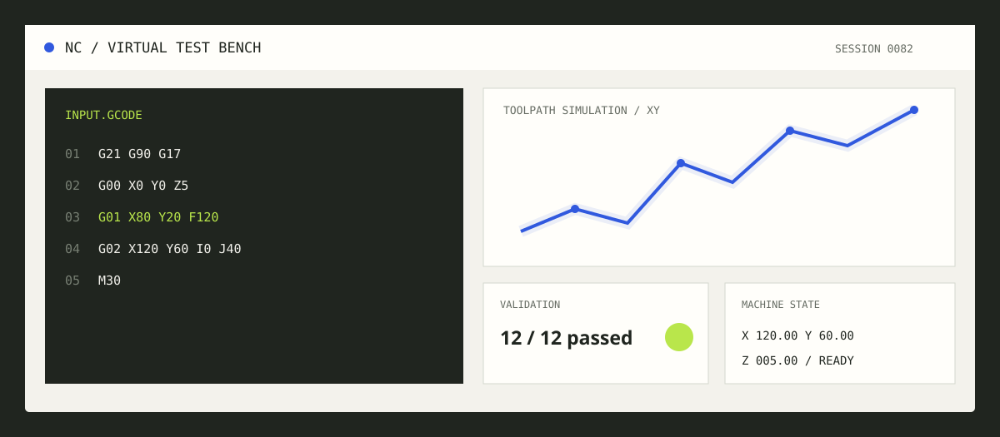

Projekt / cnc-pruefstand
Virtueller CNC-Schnittstellen- & QA-Prüfstand
Simulation zur Validierung und 2D-Visualisierung von G-Code/NC-Steuerungsbefehlen für Industriemaschinen inklusive automatisierter Qualitätsprüfung (QA).
- PHP
- Python
- C++ Logik
- G-Code Parsing
- JSON
- QA-Automatisierung

Projektvorschau · Demo folgtBrowser-Testwerkzeug
G-Code Simulator & QA-Checker
Lokal im Browser verarbeitet. Es werden keine Befehle an eine Maschine gesendet.
Unterstützt G00, G01, G81, G82, G80 sowie G20/G21 und G90/G91.
Werkstück / XY-Ebene
- Eilgang
- Vorschub
- Bohrung
QA-Prüfprotokoll
Bereit- Beispielcode wird geprüft. Du kannst ihn ändern und erneut ausführen.
Problem und Lösung
Dieses Projekt simuliert das Einlesen, Validieren und Visualisieren von NC-Steuerungsbefehlen. Es prüft G-Code-Parameter auf Plausibilität und Sicherheit (z. B. Schwellenwerte und Werkzeugbahnen), generiert eine grafische 2D-Vorschau und führt automatisierte QA-Testläufe zur Schnittstellen-Validierung durch.